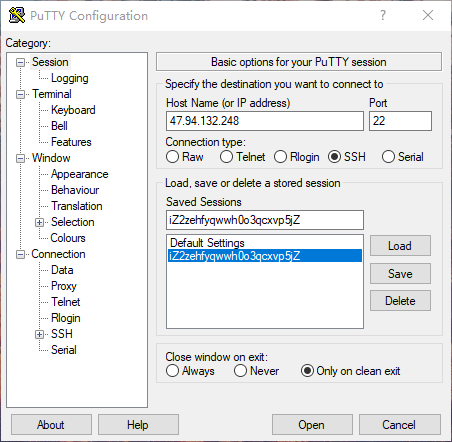
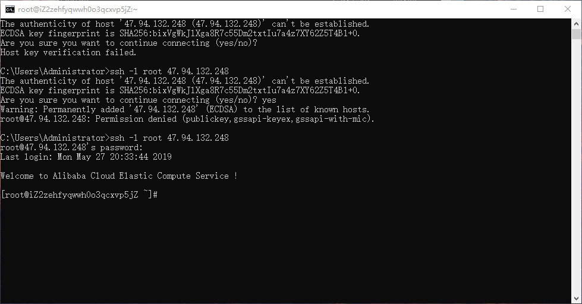
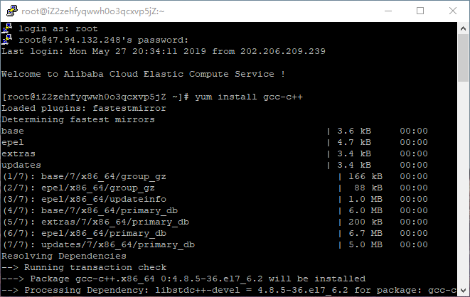
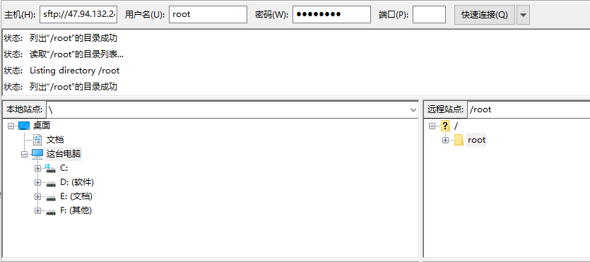
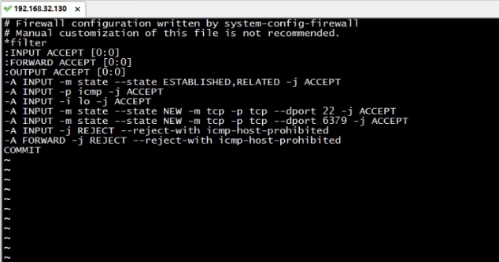
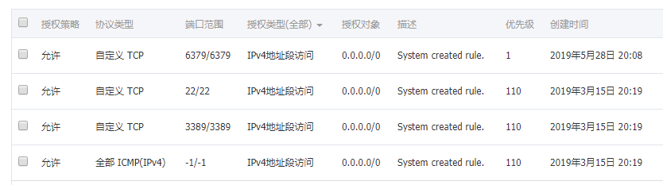

Redis 是完全开源免费、遵守 BSD 协议的一种 NoSQL 数据库，一个高性能的 key-value 数据库。
配置 linux 系统
这不是本文的重点，简单介绍一下两种方案。
方案一
安装虚拟机，并在虚拟机中安装 linux 系统。
方案二
我是之前购买的阿里云 ECS，选择了 CentOS 7.6 64 位镜像
安装 Redis
连接服务器
这里可以使用 cmd 命令行，也可以使用远程连接工具 PuTTY 来操作。我使用的 PuTTY，在这里下载
cmd 窗口使用如下命令连接：
1 | ssh -l root [你的服务器IP] |
PuTTY 工具，按照下图填写 HostName 和 Port，可以自定义名称，保存之后，选择刚刚创建的实例，Open 即可

连接 CentOs 时，出现了一点小意外：

这里重置一下阿里云 ECS 的实例密码即可。
注意区分在浏览器中远程连接的 6 位密码和这里重置的密码。
打开连接工具后，输入用户名 root，再输入刚刚重置的密码就可以了进入服务器了。不出意外的话，你应该会看到这句话：
1 | Welcome to aliyun Elastic Compute Service! |
安装 gcc
Redis 是用 C 语言开发的，安装 Redis 需要将官网的源码进行编译，编译依赖 gcc 环境。使用一下命令安装 gcc：
1 | yum install gcc-c++ |

期间可能会让你确认一下，输入 yes 即可。最后会出现 Complete!字样。
安装 Redis
下载并上传 Redis
Redis下载地址，我下载的版本是 5.0.5。
下载完成后，我们使用FileZilla将文件上传到服务器，将左侧的本地文件，拖动到右侧服务器的 root 目录下即可。

编译安装
使用以下命令进行解压编译：(当前为根目录)
1 | tar -zxvf redis-5.0.5.tar.gz |
指定路径安装：（当前在 redis-5.0.5 目录下）
1 | make PREFIX=/usr/local/redis install |
将配置文件拷贝到安装路径：
1 | cp redis.conf /usr/local/redis |
启动 redis
1 | cd /usr/local/redis/bin |
但是这种启动模式是前端启动模式，启动之后，当前窗口就不可用了，使用 Ctrl+C 停止当前启动。
修改 redis.conf 配置文件，使用后端启动模式:
1 | cd .. |
进入插入模式，向下找到 daemonize no
将 no 改为 yes，:wq 保存并退出。vim 基本操作自行百度。
使用后端启动模式启动 redis：
1 | ./bin/redis-server ./redis.conf |
验证 redis 是否启动，使用 ps 命令查找进程：
1 | ps -ef | grep -i redis |
进入 redis 客户端：
1 | ./bin/redis-cli |
关闭 redis：
1 | ./bin/redis-cli shutdown |
Jedis 入门
下载 Jedis jar 包：
两个小问题
在 Java Project 中连接 Jedis 时，我遇到了两个小问题：
- 出现 java.lang.NoClassDefFoundError 错误。
这是一个常见的 JVM 异常抛出，当 JVM 发现一个 classloader 试图去 Load 一个 class，而此 class 在当前的 classloader tree 中找不到的时候，就会抛出此异常。
将 Jedis 的 jar 包重新 build 两次，问题就就解决了。 - 出现 JedisConnectionException
无法连接到远程的 Jedis 数据库。这可能是由于你的服务器没有放行 6379 端口。
解决方法
本地服务器尝试：
1 | vim /etc/sysconfig/iptables |

添加 6379 端口放行，并重启服务器
1 | service iptables restart |
阿里云服务器尝试：
先进入阿里云控制台，添加安全组规则，放行 6379 端口。
但是使用 telnet 检测到 6379 端口依旧无法连接。

这是由于 Redis 只监听本地的 127.0.0.1 的 6379 端口，外网传入的请求是无法接收的。
修改 redis.conf：将 bind 后跟的 127.0.0.1 修改为 0.0.0.0，重启 Redis 即可。大功告成！！


如果长时间无法加载，请针对 disq.us | disquscdn.com | disqus.com 启用代理